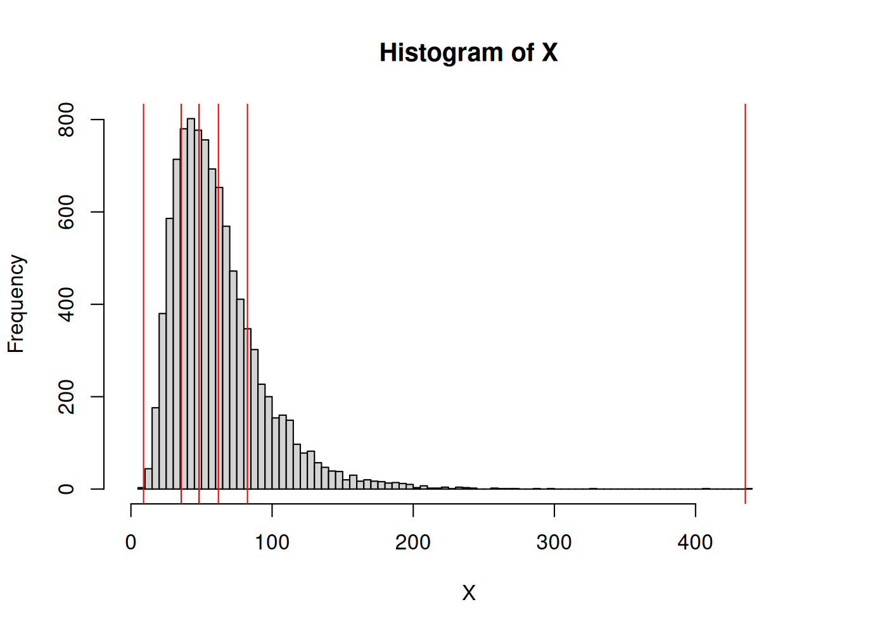
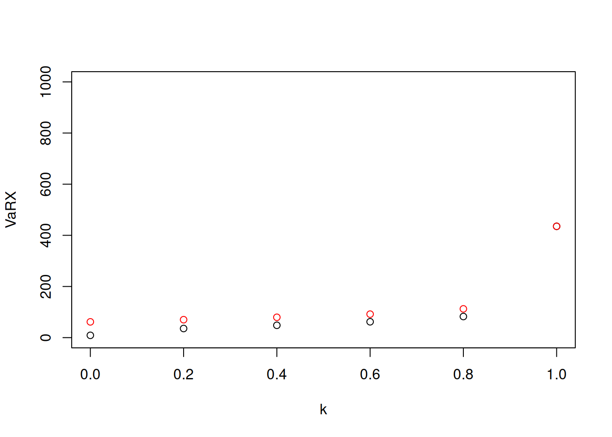

Capítulo 6 Medidas de riesgo
Se tiene algunas propiedades deseables para una medida de riesgo, \(\zeta: \mathbb{R} \longrightarrow \mathbb{R}\).
- Homogenidad \[\begin{equation} \zeta( a X ) = a \zeta( X ) \end{equation}\]
- Invarianza ante las traslaciones \[\begin{equation} \zeta( \alpha X + a ) = \zeta( \alpha X ) + a \end{equation}\]
- Monotonicidad \[\begin{equation} \zeta( X + a ) = \zeta( X ) + a \end{equation}\]
- Sub-aditividad \[\begin{equation} \zeta( X_1 + X_2 ) \leq \zeta( X_1 ) + \zeta( X_2 ) \end{equation}\]
Si en caso la medida de riesgo satisface las cuatro propiedades anteriores se dice que es un medida de riesgo coherente.
\[\begin{equation} VaR_{\alpha}( X ) = F_X^{-1}( \alpha ) \end{equation}\]
\[\begin{equation} TVaR_{\alpha}( X ) = \frac{1}{1-\alpha} \int\limits_{\alpha}^1 VaR_u( X )\ du \end{equation}\]
u <- 4
s <- 0.5
n <- 1e4
X <- rlnorm( n, meanlog = u, sdlog = s )
k <- seq( 0, 1, 0.2 )
VaRX <- quantile( X, probs = k, names = FALSE )
TVaRX <- sapply(
1:length( VaRX ),
FUN = function( i ) ifelse( k[ i ] < 1, ( 1 / ( 1 - k[ i ] ) ) * mean( X * ( X > VaRX[ i ] ) ), max( X ) ) )
hist( X, breaks = 100, xlim = c( 0, 1.1 * max( X ) ) )
abline( v = VaRX, col = 'red' )

